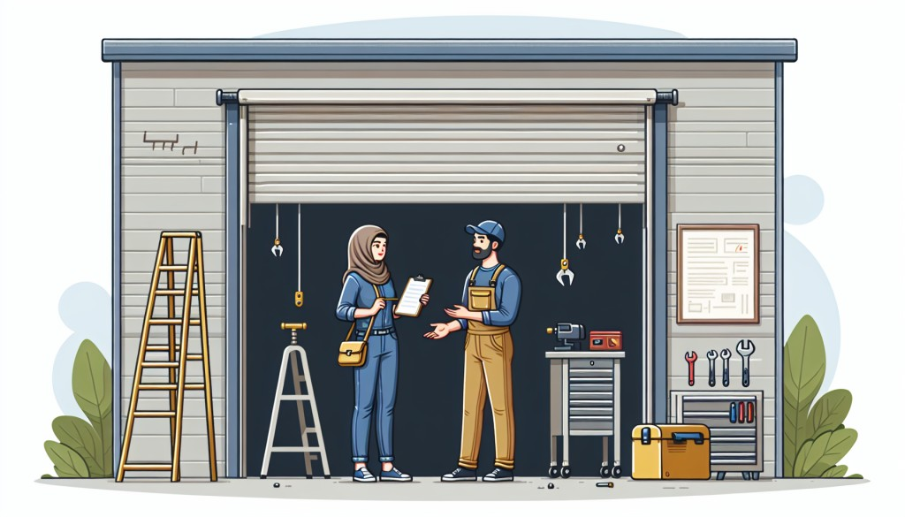
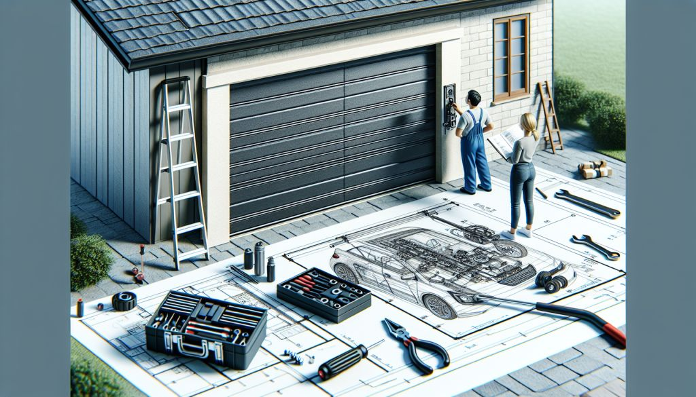

News
Inspection and Testing Morris, Illinois
Inspection and Testing Morris, Illinois
Visual Inspection of Door Panels Morris, Illinois
Checking Hardware Tightness Morris, Illinois
Testing Manual Operation Morris, Illinois
Safety Reverse Test Morris, Illinois
Lubrication Naperville, Illinois
Lubrication Naperville, Illinois
Choosing Appropriate Lubricants Naperville, Illinois
Lubricating Hinges and Rollers Naperville, Illinois
Lubricating Tracks Naperville, Illinois
Frequency of Lubrication Naperville, Illinois
Spring and Cable Maintenance New Lenox, Illinois
Spring and Cable Maintenance New Lenox, Illinois
Checking Spring Tension New Lenox, Illinois
Inspecting for Wear and Tear New Lenox, Illinois
Replacing Worn-Out Springs New Lenox, Illinois
Adjusting or Replacing Cables New Lenox, Illinois
Sensor and Opener Functionality Orland Park, Illinois
Sensor and Opener Functionality Orland Park, Illinois
Testing Sensor Alignment Orland Park, Illinois
Cleaning Sensors Orland Park, Illinois
Opener Force Adjustment Orland Park, Illinois
Battery Replacement for Wireless Controllers Orland Park, Illinois
Weather-stripping and Seal Maintenance Oswego, Illinois
Weather-stripping and Seal Maintenance Oswego, Illinois
Inspecting Bottom Seal Oswego, Illinois
Replacing Worn Weather-stripping Oswego, Illinois
Checking Side and Top Seals Oswego, Illinois
Proper Alignment for Energy Efficiency Oswego, Illinois
About Us
Contact Us
Overhead Door Company of Joliet
What is Involved in a Comprehensive Garage Door Planned Maintenance Routine?
Apr 08, 2026
A comprehensive garage door planned maintenance routine is crucial for ensuring the longevity, safety, and smooth operation of your garage door.. This often-overlooked element of home maintenance can save homeowners from unexpected and costly repairs while enhancing the overall functionality of the garage door system.

What is the Importance of Regularly Scheduled Maintenance for Your Garage Door?
Apr 08, 2026
The Importance of Regularly Scheduled Maintenance for Your Garage Door When we think about home maintenance, our minds often drift towards the more visible aspects of our house—roof repairs, lawn care, or the occasional paint job.. Yet, one essential component that often gets overlooked is the garage door.
How to Save Money and Prevent Breakdowns with This Simple Garage Door Maintenance Trick
Apr 08, 2026
In todays fast-paced world, where every dollar counts and time is of the essence, maintaining household items often takes a backseat.. One such neglected component is the humble garage door.

How to Unlock the Secret to a Long-Lasting Garage Door with Regular Maintenance
Apr 08, 2026
Unlocking the secret to a long-lasting garage door is simpler than many might think.. The key lies in regular maintenance, a practice often overlooked by homeowners until a problem arises.